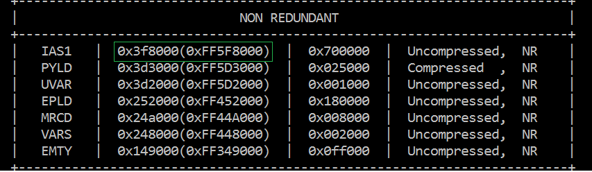
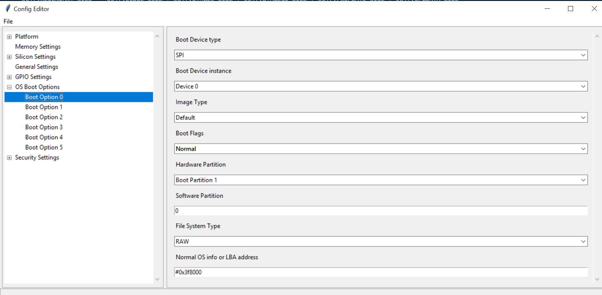

Boot from Flash¶
Creating Container image.¶
Container image is stored in raw format on flash partition without using EXT2 or FAT file system. See Create Container Boot Image for more details.
Note
Container image max size is 0x700000. Exclude Initrd file during Container image creation to reduce size.
Place the image in platform folder¶
Create folder SpiIasBin/ in platform folder of specific project.
Example: Platform/<ProjectBoardPkg>/SpiIasBins
Copy Container binary image into SpiIasBin folder.
Note
Container image should be named as iasimage1.bin for Ist Container region and iasimage2.bin for second Container region.
BIOS BOOT¶
Step 1: Add iasimage to non-redundant region of BIOS region.:
('SPI_IAS1.bin' , '' , self.SPI_IAS1_SIZE, STITCH_OPS.MODE_FILE_PAD | ias1_flag, STITCH_OPS.MODE_POS_TAIL)
Step 2: Define size of Container image:
self.SPI_IAS1_SIZE = 0x700000
Step 3: Increase non-redundant area size by Container image:
self.NON_REDUNDANT_SIZE = X + self.SPI_IAS1_SIZE
Step 4: Increase slim bootloader size to max:
self.SLIMBOOTLOADER_SIZE = 0xE00000
Step 5: Define iasimage flag:
ias1_flag = 0 if self.SPI_IAS1_SIZE > 0 else STITCH_OPS.MODE_FILE_IGNOR
Step 6: Remove any redundant region to create space for Container image:
#('REDUNDANT_B.bin' , '' , self.REDUNDANT_SIZE,STITCH_OPS.MODE_FILE_PAD, STITCH_OPS.MODE_POS_HEAD)
Boot options for Boot BIOS.¶
See Boot Options for more details.
Step 1: Get LBA address from flash map during build. For example refer below image, 0x3f8000 is the LBA offset of Container image.
{kind=link}
Step 2: Config boot options in config editor as below to boot from BIOS.
{kind=link}
Adding Container to PDR region using Stitching.¶
Container image can be added to PDR region in two ways using stitching or using FIT tool.
Using Stitching method.
Step 1: To place the image in PDR region, add the below changes to StitchIfwiConfig.py in function get_xml_change_list().:
('./FlashLayout/PdrRegion/Length', '0x700000'),
('./FlashLayout/PdrRegion/InputFile', '$SourceDir\iasimage1.bin'),
('./FlashLayout/PdrRegion/Enabled', 'Enabled'),
Step 2: Copy iasimage1.bin to ‘Input/iasimage1.bin’
Step 3: Stitch the final image.
Adding Container image to PDR using FIT tool.
Step 1: Open the IFWI using FIT tool.
Step 2: Load Container image into PDR region.

Step 3: Build the image.
{kind=link}